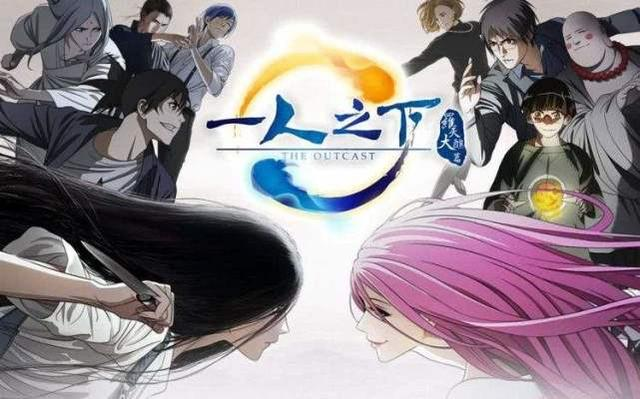

剧情简介
主人公·张楚岚，某天在墓地遭遇僵尸的袭击。在万分危急的时刻，一个少女出现在了他的面前手里拿着的菜刀将敌人击倒对着放心了得楚岚说道“现在这里有些困境，你就自己面对吧”留下了有着深意的话，离开了

过了几天，在大学上学的张楚岚的面前，又出现了少女的身影。自从那个瞬间，张楚岚激荡的命运便开始向前推进了。

在中国的乡下发生了盗墓事件，而在那出现的，是一位自称是墓主，张锡林的孙女的女性,宝宝。 在同一个时间，为了祭拜而返乡、正就读都市的大学的张楚岚，被宋警官告知祖父张锡林的墓，被不知名的人给盗的事。 同时，还有一位可能是楚岚的姐姐的女性来到这。第一次听到自己有姐姐而感到疑惑的楚岚，为了修复锡林的墓而到了墓园。 在那里，他看到了正在挖墓的宝宝。看到盗墓者并确保盗墓的证据的楚岚虽然慌慌张张的逃走了，但头部挨了一击以后便没了意识。 醒来时它看见的是，正打算袭击宝宝的人们以及单手拿着菜刀跟他们战斗的宝宝。 感到困惑的楚岚此时脑里突然闪过宋警官说的话。自称是张锡林孙女的女性……“难道说…是姐姐吗？！”
